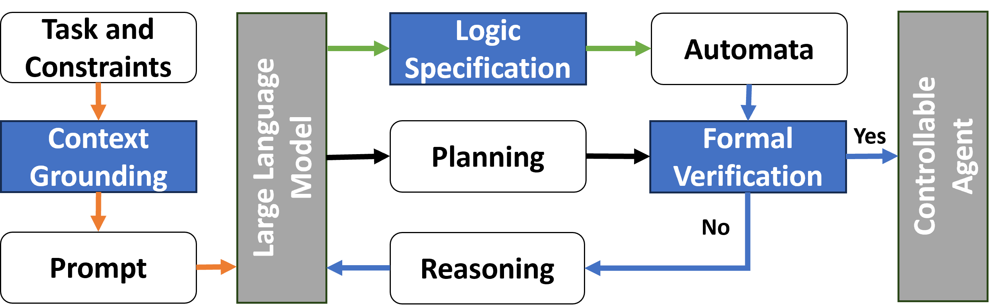

Introduction
Large Language Model (LLM)-enabled Cyber-Physical Systems (CPS)
In recent years, the development of Large Language Models (LLMs) has surged, driven by the advent of the transformer architecture and advancements in computational capabilities. Distinct from conventional models that are typically trained on domain-specific datasets, the training process of these LLMs mirrors human learning—gathering knowledge from diverse sources. This approach holds considerable promise for achieving human-like cognitive capabilities.
Cyber-Physical Systems (CPS) represent a fusion of computing, networking, and physical operations. Distinguished by their autonomous and adaptive features, CPS shows a remarkable advancement beyond traditional control systems.

Motivated by the advancements in LLMs, researchers have begun to incorporate LLMs into CPS, leading to the development of LLM-enabled CPS. For instance, LLMs have been integrated into CPS to facilitate task planning and navigation synthesis in controllable robots or agents.
While LLMs significantly augment the capabilities of CPS by offering sophisticated intelligence support, these LLM-enabled CPS often suffer from hallucinations. Hallucination refers to the generation of text or information that lacks grounding in the model’s training data or factual reality. This issue arises when the model generates responses that are plausible yet inaccurate, nonsensical, or fabricated. The probabilistic nature of LLMs which are effect by hallucinations contradicts the deterministic requirements in these LLM-enabled CPS. This disparity exposes the systems to vulnerabilities and unreliability, which could lead to catastrophic outcomes. Consequently, deploying LLMs in such systems typically requires manual inspection of LLM outputs, a process that is both costly and time-consuming. Therefore, developing an automated tool to verify LLM outputs is crucial for the practical application of LLMs in real-world CPS.
However, it is nontrivial to develop a tool to assure LLM-enabled CPS, due to several significant challenges. (i) context grounding. LLMs lack inherent understanding of the physical world and specific application contexts, necessitating effective context grounding. (ii） requirements. The tool must effectively manage both safety and temporal requirements. For example, UAV missions require precise execution in terms of temporal order and timing to ensure temporal constraints, while also demanding avoidance of collisions with obstacles. (iii) formal Verification. After the LLM produces an output, it is crucial to verify whether it satisfies all specified requirements to ensure the system’s safety and reliability.
To address these challenges, we developed our tool SafePilot which aims to provide comprehensive and general assurance for LLM-enabled CPS. The source code is available at our GitHub repository.
Overview of the toolboox
The proposed toolkit consists of three main components: context grounding, logic specification and formal verification components, as shown in the figure below.
{kind=link}
Components of the toolbox
The toolbox includes the following components:
Context grounding
In the context grounding component, illustrated by orange paths, task descriptions are translated into natural language prompts through prompt engineering. If the prompt design is insufficient, preventing full grounding, it may lead to fundamental errors. Typically, we begin with straightforward examples to confirm the LLM’s understanding of the query. Subsequently, we instruct the LLM to formulate the logical expressions for the constraints and to generate plans addressing the problem.
Logic specification
For the logic specification component, marked by green paths, task’s requirements are similarly converted into natural language prompts. The LLM is tasked with transforming these requirements into logical formulas. It outputs logic specifications that correspond to these requirements, such as first-order logic (FOL) or Linear temporal logic (LTL) formulas. These formulas are then translated into automata using formal tools, following expert review, for further verification. The consistency of formulas across iterations minimizes manual effort. Upon completion of context grounding and logic specification, the LLM formulates a preliminary plan for the controllable agent, though its compliance with constraints is yet to be confirmed.
Formal verification
The formal verification component, depicted in blue paths, receives two inputs: the plan candidate and the automaton derived from the requirements. This component utilizes formal verification tools to ascertain whether the plan breaches the formal specifications. For verification of FOL, Python Z3 is employed, while Python Spot is used for LTL verification. If the plan satisfies the formal verification, it is either deployed to the controllable agent or presented to the user. If it fails, the verification process yields detailed feedback, serving as reasoning for the LLM to refine its plan until it either passes verification or reaches the iteration ceiling.